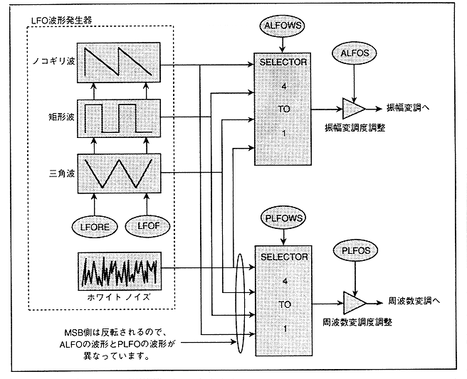

LFO is a low-frequency oscillator that is used to modulate audio signals.
∙ One LFO is installed in each slot, and each slot has an output for amplitude modulation and an output for frequency modulation.
∙ There are four types of LFO output waveforms: sawtooth state (sawtooth wave), rectangular wave (square wave), triangular wave, and noise (white noise), and these can be selected arbitrarily.
The block diagram of LFO is shown in Figure 4.52. You can reset and change the frequency of sawtooth wave, square wave, and triangle wave except the waveform in the case of noise. The LFO waveform and modulation depth can be set independently on the amplitude modulation side and frequency modulation side.
Figure 4.52 LFO block diagram
